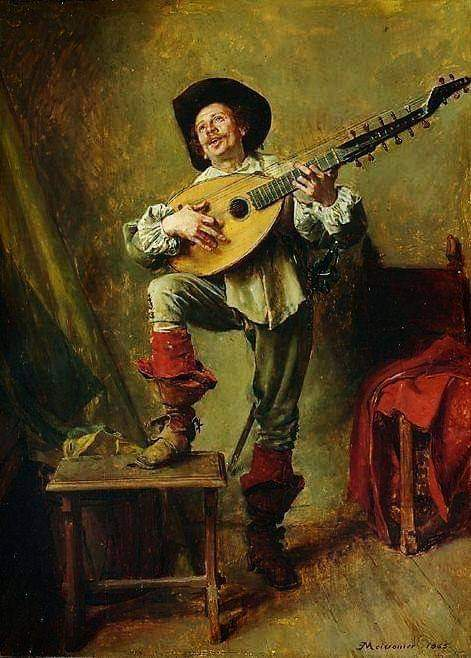

Η Μουσική και ο Στίχος
("The Music and The Verse")

Click on image to enlarge(img1)
Δέκα χρονώ ο λυρατζής –δεκάξι ο κανταδόρος/ Που είναι καλός τραγουδιστής, κι έξυπνος ριμαδόρος/ Μα τον μικρό τον λυρατζή –πόσο τονε ζηλεύει/ Την λύρα πώς την κελαϊδεί, και πώς τηνε χορεύει/
Δώδεκα χρόνια η κοπελιά, και εξήντα η παραμάνα/ Μοναχοκόρη κι ακριβή, του κύρη και της μάνας/ Στολίδι μέσα του σπιτιού –ο ήλιος δεν την βλέπει/ Γιατί τα παραμύθια λέν’ –την ομορφιά πως κλέβει/
Μονάχα απ’ το απόγευμα –μέχρι αργά το βράδυ/ Ανοίγει το παράθυρο, χαζεύει το σοκάκι/ Και απ’ τ’ ανοιχτό παράθυρο την Ομορφιά χαρίζει/ Να φωτιστεί η γειτονιά –καρδούλες να ραγίζει/
Δέκα χρονώ ο λυρατζής –μα είναι μαγεμένος/ Κάθε βραδιά την κοπελιά, χαζεύει σαν χαμένος/ Και όταν το νυχτολούλουδο την ευωδιά σκορπίσει/ Του δοξαριού βάζει φωτιά, τις κοντυλιές αρχίζει/
Και ο καλός τραγουδιστής όμως δεν πάει πίσω/ Πότε θα βγει η κοπελιά –τις ρίμες ν’ αρχινίσω?/ Παίξε τραγούδι λυρατζή –με λόγια να το ντύσω/ Και την καρδιά της κοπελιάς, εγώ, να ξεμυαλίσω/
Δώδεκα χρόνια η κοπελιά –κοπέλια δεν λογιάζει/ Μονάχα στο παράθυρο, στέκει, κι έξω κοιτάζει/ Ακούει φωνές και μουσικές, και πώς γλεντούν οι ανθρώποι/ Πώς περπατούν στα σκοτεινά, διαβάτες –στρατοκόποι/
Ακούει κι ονειρεύεται πως φεύγει σε ταξίδια/ Σε θάλασσες κι Ωκεανούς –Κάθε βραδιά τα ίδια/ Κάθε βραδιά πια το στενό –στενότερο της μοιάζει/ Και μόνη της παρηγοριά, πως το φεγγάρι αλλάζει/
Ξέρει, από χάρτες ναυτικούς –που έχουν τα βιβλία/ Υπάρχουν, τόποι αλλαργινοί, με άλλη ιστορία/ Υπάρχουν μέρη μακρινά, και μέρη μαγεμένα/ Μα η ίδια με τα μάτια της, δεν έχει δει κανένα/
Μεσ’ τις πολλές τις μουσικές –μεσ’ στα πολλά τραγούδια/ Ακούει και μια μουσική, δεν είναι ετούτη ίδια/ Δεν μοιάζει ετούτη με καμιά –κάτι την ξεχωρίζει/ Να είναι τάχα ο σκοπός, ή αυτός που τραγουδίζει?/
Δέκα χρονώ ο λυρατζής –δεκάξι ο κανταδόρος/ Του δοξαριού ο μάστορας –κι ο έξυπνος ριμαδόρος/ Όσο γλυκειά είναι η φωνή, όσο καλή η ρίμα/ Τόσο καλή η μουσική, του λυρατζή τα πρίμα/
Αγαπησά ‘σε κοπελιά –κάνεις πως δεν το ξέρεις/ Που μου ‘χεις πάρει την καρδιά –παιχνίδι σου την έχεις/ Για αυτό κι εγώ κάθε βραδιά έξω απ’ το παραθύρι/ Τον πόνο μου θα τραγουδώ, κι ας γίνομαι ρεζίλι/
Τέτοιας λογής το νόημα, κάθε βραδιάς, η ρίμα/ Γιατί ανταριάζει ο καιρός –του πόθου του το κύμα/ Μα κι ο μικρός ο λυρατζής –και ‘κείνος αντριεύει/ Κάθε βραδιά και πιο πολύ, την λύρα του παιδεύει/
Να σε κεράσω θέλω εγώ –της μουσικής το μέλι/ Να φτιάξω τόσο όμορφο σκοπό –που ρίμα να μην θέλει/ Να τον ακούσεις μια φορά, και χίλιες να θυμάσαι/ Να τον ακούς και στα όνειρα, που βλέπεις σαν κοιμάσαι/
Τέτοιο τρανό το πάλεμα της νότας με την λέξη/ Κι άντε να δούμε κοπελιά τώρα τί θα διαλέξεις/ Δώδεκα χρόνια κοπελιά –κοπέλια δεν λογιάζεις/ Μόνο στο παραθύρι σου –βγαίνεις κι αναστενάζεις/
Δώδεκα χρόνια κοπελιά –ταξίδια κανονίζεις/ Σε θάλασσες κι Ωκεανούς –ο νους σου αρμενίζει/ Σκέφτεσαι χάρτες ναυτικούς, ρότες κι ανεμολόγια/ Πώς να ‘ταν να ‘παιρνες μαζί, τις νότες και τα λόγια/
Την αγριεμένη θάλασσα πώς να την κανακέψεις?/ Την ρίμα από τον σκοπό πώς να την ξεμπερδέψεις?/ Τραγούδι είναι που με καλεί –στης θάλασσας το κύμα/ Τραγούδι φτιάχνει κι ο σκοπός παρέα με την ρίμα/
Δέκα χρονώ ο λυρατζής –δεκάξι ο κανταδόρος/ Ο λυρατζής αμούστακος –κι ο νιός ελπιδοφόρος/ Παλεύουν να κερδίσουνε, της κοπελιάς τα χάδια/ Μα εκείνη ονειρεύεται θάλασσες και καράβια/
copyright©: [mariavarg –Maria Vargiakaki -Μαρία Βαργιακάκη]

Click on image to enlarge(img1)